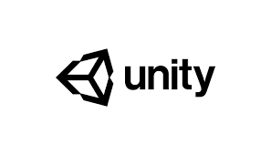
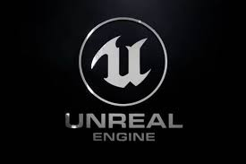
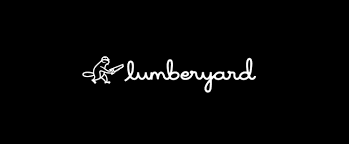

Game
Developer
Dashboard
Best Game Engine
My Hobby

Unity adalah platform game engine yang dikembangkan oleh Unity Technologies, pertama kali diumumkan dan dirilis pada bulan Juni 2005 di Konferensi Pengembang Seluruh Dunia Apple Inc.
Download Unity? Klik
disini

Unreal Engine adalah game engine yang dikembangkan oleh Epic Games, pertama kali dipamerkan di game first person shooter game pada tahun 1998.
Download Unreal Engine? Klik
disini

Amazon Lumberyard adalah freeware platform game engine yang dikembangkan oleh Amazon dan berdasarkan CryEngine, yang dilisensikan dari Crytek pada tahun 2015.
Download Lumberyard? Klik
disini